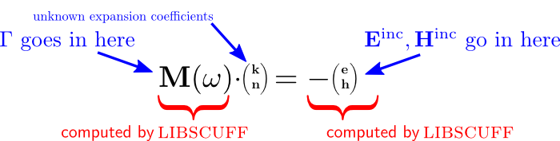

libscuff API: Main Flow Routines
This page documents the main flow portion of the libscuff API -- that is, the routines that implement the key steps in the procedure for solving electromagnetic scattering problems.
The surface-integral-equation/boundary-element-method (SIE/BEM) approach to Maxwell's equations implemented by scuff-em is discussed on the implementation notes page (and in more detail in the technical documents referenced therein); the key equation is this linear system of equations:

in which the RHS vector
describes incident fields impinging on one or more scatterers,
the matrix describes interactions among those scatterers,
and the unknown vector
describes surface currents induced on the scatterers by the
incident fields. (In what follows, we will refer to the matrix here
as M, to the vector on the left-hand side as KN, and to the
vector on the right-hand side as RHS).
After assembling and solving this system
for the surface currents, we can use them to compute various physical
quantities of interest (scattered fields, power/force/torque, etc.).
The steps in the main flow of a libscuff scattering problem are the following:
-
Create an
RWGGeometryobject from a.scuffgeofile. -
Assemble the BEM matrix
Mat a given frequency (and Bloch vector for periodic geometries). -
Assemble the RHS vector
RHSfor a given incident field. -
Solve the linear system
M*KN=RHSfor the surface-current vectorKN. -
Perform various post-processing operations on the
KNvector to compute physical quantities of interest.
The libscuff API routines for each of these steps are discussed below.
1. Creating an RWGGeometry
The RWGGeometry class constructor takes a string
argument that should be the name of a
.scuffgeo file.
C++:
RWGGeometry *G = new RWGGeometry("MyGeometry.scuffgeo");
Python:
G = scuff.RWGGeometry("MyGeometry.scuffgeo");
2. Assembling the SIE/BEM matrix
The BEM matrix is assembled by the AssembleBEMMatrix() class method of RWGGeometry.
The simplest invocation of this function requires only that you specify the angular frequency:
C++:
HMatrix *M = G->AssembleBEMMatrix(3.197);
python:
M = G.AssembleBEMMatrix(3.197);
The return value of this function is a pointer to a newly-allocated
instance of HMatrix, a
simple matrix class provided
by libscuff. If you later want to
recompute the matrix at a different frequency, you can pass
M back as the second argument of
AssembleBEMMatrix to avoid reallocating new storage:
// first computation; allocates a new matrix HMatrix *M = G->AssembleBEMMatrix(3.197); // subsequent computation; reuses the existing matrix G->AssembleBEMMatrix(5.134, M);
The angular-frequency parameter to AssembleBEMMatrix has type cdouble, which is
libscuff shorthand for a complex number consisting
of two double-values:
typedef std::complex<double> cdouble;
cdouble Omega(2.3, 4.5); HMatrix *M = G->AssembleBEMMatrix(Omega);
3. Assembling the RHS vector
The RHS vector is assembled by the AssembleRHSVector() class method provided by RWGGeometry.
Before you can call this routine, you must define the incident field in your scattering geometry. This is done by instantiating a class derived from the IncField base class defined in libscuff.h.
For most users, this will be a one-liner, because
libscuff comes with several
built-in classes derived from IncField
that implement commonly-encountered types of incident field,
including plane waves, Gaussian laser beams, and the fields of
pointlike dipole radiators. For an instance, you can define a
plane wave traveling in the positive z direction with
E- field polarized in the x direction like this:
double pwDir[3] = { 0.0, 0.0, 1.0 }; cdouble pwPol[3] = { 1.0, 0.0, 0.0 }; pw = new PlaneWave(pwPol, pwDir);
pw = scuff.PlaneWave([1,0,0], [0,0,1])
For details on how to create plane waves and other types of
incident fields, as well as information on how to create your
own derived subclass of IncField to represent an
arbitrary incident field, see the
IncField documentation.
Having defined our incident field, we pass it, and the frequency,
to AssembleRHSVector:
pw = new PlaneWave(pwPol, pwDir); HVector *RHS = AssembleRHSVector(Omega, pw);
pw = scuff.PlaneWave([1,0,0], [0,0,1]) RHS = G.AssembleRHSVector(Omega, pw)
As with AssembleBEMMatrix, these invocations
of AssembleRHSVector will cause a new HVector
to be allocated. If you later want to reuse the same vector
to store a different right-hand side, you can pass it as the
third argument:
// first computation; allocates a new vector pw1 = new PlaneWave(pwPol1, pwDir1); HVector *RHS = G->AssembleRHSVector(Omega, pw1); // subsequent computation; reuses the existing vector pw2 = new PlaneWave(pwPol2, pwDir2); G->AssembleRHSVector(Omega, pw, RHS);
4. Solving the BEM system
Having assembled the BEM matrix and the RHS vector, the next step is to do some numerical linear algebra to solve the BEM system for the vector of surface-current expansion coefficients.
Solving the BEM system in C++ programs
From a C++ program, the easiest way to do this is to use the
simple interface to
LAPACK provided by
the
libscuff matrix/vector support layer.
Specifically, after assembling the BEM matrix M you
say M->LUFactorize() to replace M with its
LU-factorization; then, after assembling the RHS vector RHS
you say M->LUSolve(RHS) to replace RHS
with the solution of the system M*KN=RHS.
Note that you only have to call LUFactorize()
once on a given BEM matrix, after which you can make any
number of calls to LUSolve() to solve the linear system
for any number of right-hand side vectors. If you subsequently
reassemble the BEM matrix (say, at a different frequency), you
must call LUFactorize() again before starting to
do LUSolves..
RWGGeometry *G=new RWGGeometry("MyGeometry.scuffgeo"); HMatrix *M=G->AllocateBEMMatrix(); HMatrix *KN=G->AllocateRHSVector(); for( nf=0; nf<NumFreqs; nf++ ) { G->AssembleBEMMatrix( OmegaValues[nf], M ); M->LUFactorize(); for( ni=0; ni<NumIncidentFields; ni++ ) { G->AssembleRHSVector( OmegaValues[nf], IncFields[ni], KN ); M->LUSolve(KN); // now call GetFields() and/or do other things with the solution vector KN }; };
Solving the BEM system in Python programs
Probably the easiest thing to do here is to use
numpy.linalg.solve:
import numpy; KN = numpy.linalg.solve(M, RHS)
Alternatively, you can access the LAPACK wrappers provided by libscuff:
M2 = scuff.HMatrix(M) M2.LUFactorize() KN = RHS M2.LUSolve(LHS2)
5. Postprocessing to compute scattered fields and other quantities
The final step in the main flow is to use the solution to the BEM system to compute various physical quantities of interest.
Field components at arbitrary points in space
Field components are computed by the GetFields class method of RWGGeometry.
This method offers a choice of several
calling conventions, ranging from simplest to most powerful.
But before we can discuss these we need to recall a
peculiarity of the SIE/BEM approach to scattering problems.
Selecting the Incident, Scattered, or Total Fields
To understand the calling convention for GetFields, we
must first remember that in an SIE/BEM scattering problem
there are three types of fields we can compute:
-
the incident fields, which depend on the
IncFieldobject passed toAssembleRHSVector, -
the scattered fields, which depend on the
HVectorobject obtained by solving the linear BEM system, and -
the total fields, representing the sum of incident and scattered contributions.
Thus the first two parameters to GetFields are
an IncField pointer and an HVector pointer:
RWGGeometry::GetFields( const IncField *IF, const HVector *KN, ... /* other arguments */
Here IF should be the same IncField pointer you passed to AssembleRHSVector, while KN
should be the solution to the BEM system, as computed (for instance)
by saying something like M->LUSolve(KN).
You can select the type of field computed by GetFields by
passing NULL values for one of these parameters to omit
the corresponding field contributions. More specifically,
-
If you pass
NULLfor theKNargument, the fields computed will be the incident fields. -
If you pass
NULLfor theIFargument, the fields computed will be the scattered fields. -
If you pass non-
NULLvalues for both arguments, the fields computed will be the total fields.
Note that the term "scattered fields" is actually somewhat imprecise,
because the fields arising from the surface currents are in fact the
total fields in regions that do not contain field sources.
For example, consider a compact dielectric object irradiated by
a plane wave. Outside the object, we have an incident field
(the field of the plane wave) and a scattered field (the field arising
from the surface currents on the sphere), and the total field is
the sum of these two contributions.
However, inside the object we have only the contributions
of the surface currents; the field arising from these currents
is already the total field inside the sphere with no contribution
from the incident field. For evaluation points inside the object,
the scattered and total fields as computed by GetFields
are identical, while the incident field is zero.
Field components at a single point
The simplest way to use GetFields is to compute the
Cartesian components of the E and H fields
at a single point x. The function prototype in this case
is
RWGGeometry::GetFields( const IncField *IF, const HVector *KN, const cdouble Omega, const double X[3], cdouble EH[6] );
where the additional inputs beyond those discussed above are
Omega:the angular frequencyX: the cartesian components of the evaluation pointKN:the surface-current expansion vector
and, on return, the output vector EH contains
the field components:
EH[0..2]are the cartesian components of the scattered E field,EH[3..5]are the cartesian components of the
Scattered field components at multiple points
To compute the scattered-field components at N evaluation points,
you could just repeat the above procedure N times, but you will
get better throughput by first
[creating an HMatrix][MatrixVector]
of dimension N x 3, whose rows are the Cartesian components
of the evaluation points, and then passing this HMatrix in
place of the X parameter to GetFields:
HMatrix *RWGGeometry::GetFields( const IncField *IF, const HVector *KN, const cdouble Omega, const HMatrix *XMatrix, HMatrix *FMatrix = 0);
In this case, the return value is a newly allocated HMatrix
of dimension N x 6, whose rows are the cartesian components
of the scattered fields at your evaluation points, in the order
Ex, Ey, Ez, Hx, Hy, Hz. (If you already have a matrix of the correct
size lying around, perhaps from a previous call to GetFields,
you can pass it as the FMatrix parameter to suppress allocation
of a new HMatrix).
In python, you can create
an Nx3 XMatrix either by reading from a text
file (containing the three cartesian coordinates of each evaluation
point on a separate line, with blank lines and lines beginning with
# ignored):
X=scuff.HMatrix("MyEvalPointFile") Fields=G.GetFields(PW, KN, Omega, X) # now we have Fields[0][0..5] = (Ex,Ey,Ez,Hx,Hy,Hz) at point 1 # [1][0..5] = (Ex,Ey,Ez,Hx,Hy,Hz) at point 2 # etc.
or by creating an XMatrix of size N x 3 and
setting the entries by hand. For example, if we want the fields at
two evaluation points with coordinates (0.1,0.2,0.3)
and (0.4,0.5,0.6), we can say
X=scuff.HMatrix(2, 3); # for 2 eval points X->SetEntry( 0, 0, 0.1 ); # x coord of first point X->SetEntry( 0, 1, 0.2 ); # y coord of first point X->SetEntry( 0, 2, 0.3 ); # z coord of first point X->SetEntry( 1, 0, 0.4 ); # x coord of second point X->SetEntry( 1, 1, 0.5 ); # y coord of second point X->SetEntry( 1, 2, 0.6 ); # z coord of second point Fields=G.GetFields(PW, KN, Omega, X) # now we have Fields[0][0..5] = (Ex,Ey,Ez,Hx,Hy,Hz) at point 1 # [1][0..5] = (Ex,Ey,Ez,Hx,Hy,Hz) at point 2 # etc.
Alternatively, you can create X as a numpy.array:
X=numpy.array( [ [0.1, 0.4], [0.2,0.5], [0.3, 0.6]]); Fields=G.GetFields(PW, KN, Omega, X)
Note that, when constructed as a numpy.array,
X must have "shape" (3,N),
not (N,3) as you might expect.